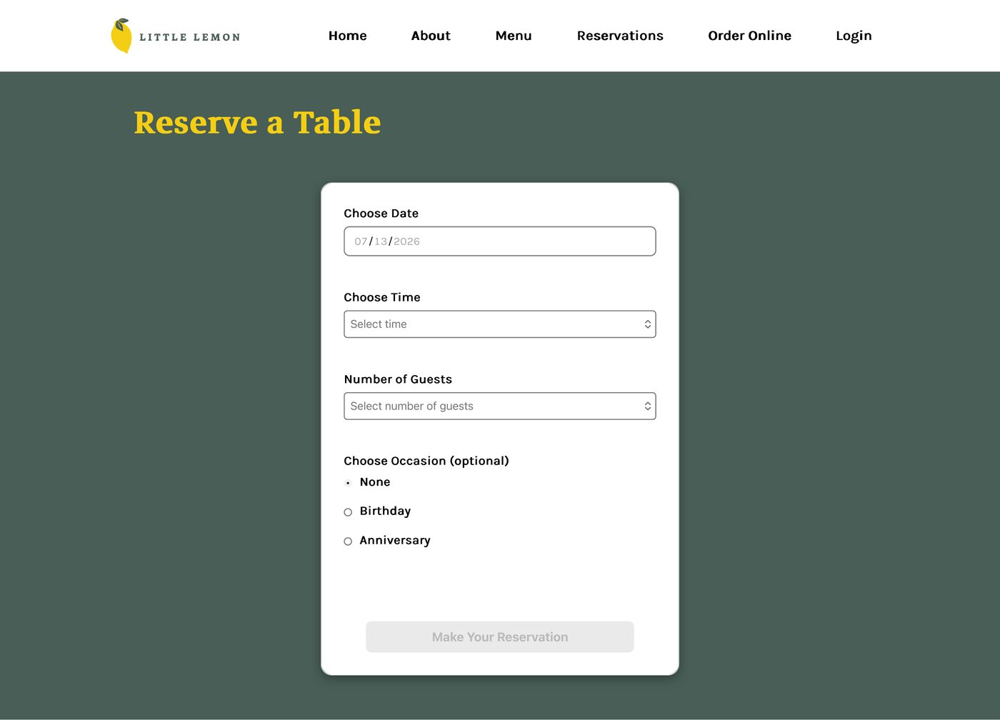
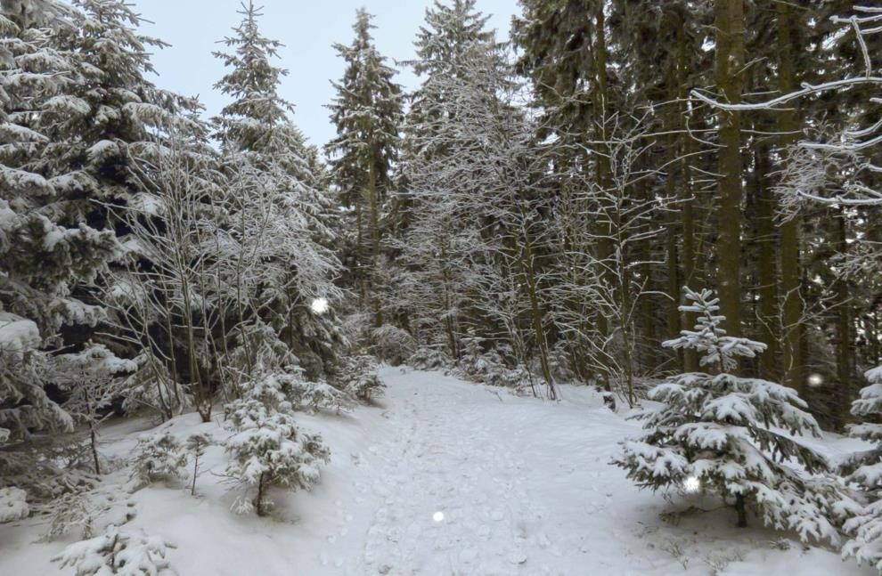
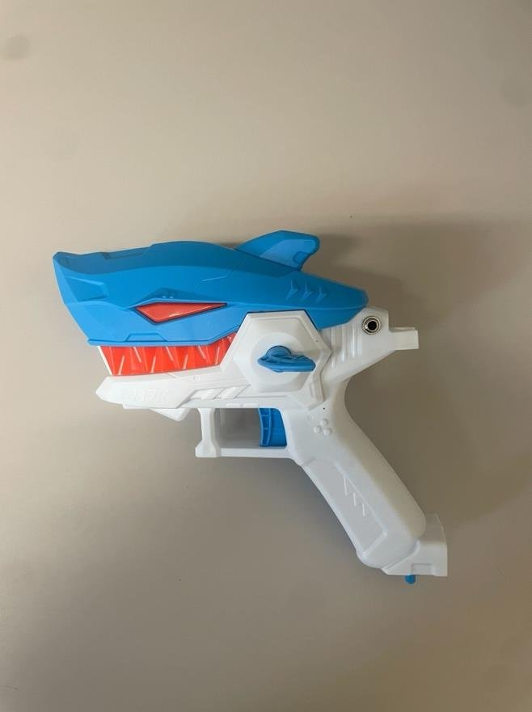
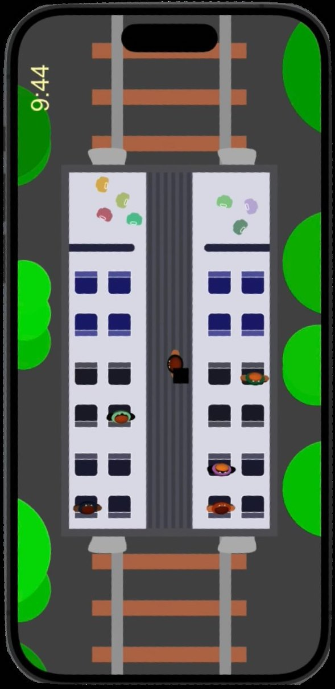

Projects
Three case studies, from a from-scratch restaurant website to a campus app redesign. Each one moved through the same rhythm: discover, design, test, refine.
Little Lemon
My capstone project for the Meta Front-End Developer Professional Certificate: a full website for a fictional Mediterranean restaurant in Chicago, built to the program's real-world brief: marketing site, menu, and a working table-reservation flow.
View repo on GitHub →
Home
The homepage leads with what a hungry visitor needs first: who the restaurant is, a reserve-a-table call to action, and a "this week's specials" strip with real dish photography and pricing. Below that, a testimonials section builds trust before asking for a booking, and a short "about" block gives the restaurant a human face with owners Mario and Adrian before the footer closes with contact details and social links.
I kept the navigation identical across every page (Home, About, Menu, Reservations, Order Online, Login) so the site reads as one coherent product rather than a set of disconnected screens, and used a warm, high-contrast palette, deep green and mustard yellow against white, to match the brand without overwhelming the food photography.
Reservations

The reservation flow is deliberately short: choose a date, pick a time, set the number of guests, and optionally flag an occasion like a birthday or anniversary. Each control uses native form elements (date picker, select, radio group) so the form works with a keyboard and a screen reader out of the box, and the primary action stays disabled until the required fields are filled in, a small guardrail against submitting an incomplete booking.
Redesigning the MacDaily
Macalester's campus news, the "MacDaily," lived entirely in a long daily email. Our team set out to turn it into an app that students, faculty, and staff would actually want to open.

Discover
We talked with students and with a member of Macalester's ITS team who maintains the current MacDaily to understand real constraints: post-length limits, a Gmail character cap, and a push to phase out underused sections. Students told us the plain-text email format buried the events they cared about under scrolling and inconsistent formatting.
Design
We sketched an app with a photo-of-the-day home screen and separate pages for Events, Students, Faculty & Staff, Community, In the News, and Classifieds, using drop-downs to keep long event descriptions from overwhelming the screen. We also prototyped a Pinterest-style scrolling feed as an alternative home screen, purely to test the idea against the simpler categorized layout.
Test
Across two rounds of usability testing, users found events quickly but missed that they could navigate to previous days, and the categorized layout beat the Pinterest-style feed because titles were easier to scan. Feedback on drop-downs being too small led us to make the entire event row tappable, and one tester's instinct to swipe between days became a real feature: day navigation now responds to swipe gestures, not just arrow taps.
"Very simple design. I like the dropdown." Feedback from our final presentation
Refine & reflect
A heuristic evaluation confirmed our strongest area was aesthetic, minimalist design, and flagged error prevention as the weak spot to address before a real build. Longer term, campus IT suggested folding the MacDaily into Macalester's existing MacNav app rather than shipping it standalone, a more realistic path to actually reaching students.
Redesigning the MSCS Department Homepage
The Macalester Math, Statistics & Computer Science website worked fine for people who already knew the department, but it was confusing for the students who needed it most: prospective transfers evaluating whether to major in CS.

Discover
We ran a Nielsen heuristic evaluation on the live site and found three recurring violations: dense, unscannable text blocks; a faculty directory ordered by title rather than in any way a newcomer could parse; and no FAQ shortcut anywhere in the navigation. We then built a persona around transfer students and wrote four concrete tasks around their real needs: comparing courses from their old school, tracing the CS course progression, finding the department chair, and locating internship opportunities.
Design
Paper prototypes established a horizontal header, a course page split into intro/core/elective tiers with descriptions tucked into drop-downs, and a side-by-side course comparison tool letting a transfer student line up their previous school's classes against Macalester's. Colored "puffs" tagged which navigation elements led to which pages, which doubled as a way to narrate the prototype during testing.
Test
Two rounds of usability testing, one on paper and one on the Figma high-fidelity build, surfaced that users understood the interactive cues instinctively, but that heavy bold text was disrupting visual hierarchy and the course-comparison view needed clearer labeling of what "equivalent" meant. Outside developer and faculty review added more: swap the mock calendar for a real Google Calendar embed, use a more academic typeface, and standardize box sizing across pages.
"Genius" and "fascinating." Feedback on the course-comparison tool from reviewing developers
Refine & reflect
Of sixteen "I like" comments from our final presentation, twelve praised the simplicity of the layout, validation that reducing text density was the right call. We closed a navigation bug (the transfer-course shortcut skipped a step the FAQ path didn't) and left the design with a clear next step: building it with the current MSCS site's real tooling.
Additional work
A few more projects that show a different side of my range: emotional design, assistive technology, and accessibility testing.

The Path to Tranquility
A virtual-reality scene built in A-Frame with no task or goal beyond making the viewer feel calm: a snowy forest, ambient birdsong, and a hidden bunny for a moment of quiet discovery. In an emotional-impact assessment, every test user's calm and happiness scores held steady or rose, and everyone described feeling relaxed.

Switch Adapted Water Gun
An open-source assistive technology project adapting a toy water gun to fire from a 3.5mm switch, so someone without the fine motor control to pull a trigger can still play. I led the design of a custom stand for independent use by wheelchair users, built directly from watching how test users wanted to hold and aim it; during testing, a wheelchair user asked to take the finished prototype home.

Glistening Gay Terror Train
A narrative iOS game built in Swift where the player holds conversations with passengers on a train, taken from a whiteboard sketch to a functioning app with 300+ commits. Tested with 30+ users for usability and accessibility; the game was largely VoiceOver-friendly, with one puzzle mechanic flagged as the priority fix for the next iteration.